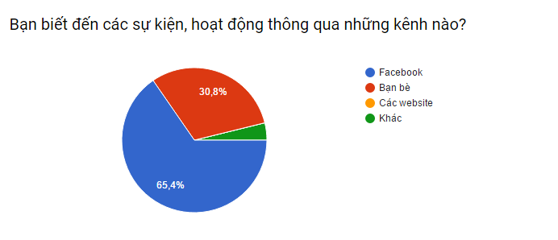

<!DOCTYPE html>
<html lang="en-us">
  <head>
    <style>
      #flippy {
      text-align: center;
      }

      #flippy button {
      background: #aa65c7;
      color: #fff;
      text-align: center;
      margin: 0 auto;
      border: none;
      border-radius: 3px;
      padding: 8px 16px;
      margin: 10px auto;
      font-size: 14px;
      font-weight: bold;
      box-shadow: 0px 3px 0px 0px #883da7;
      vertical-align: middle;
      cursor: pointer;
      text-shadow: 0 1px rgba(0, 0, 0, 0.3);
      transition: background 0.1s ease-in-out;
      }

      #flippy button:hover, #flippy button:focus {
      background: #9e4fbf;
      outline: none;
      }

      #flippanel {
      padding: 1px;
      text-align: left;
      background: #f5f5f5;
      border: 0px;
      }

      #flippanel {
      padding: 24px;
      display: none;
      }
    </style>
    
    <meta charset="UTF-8">
    <title>.: Trang chủ - Nhóm 2 - THNMCNTT2 :. </title>
    <meta name="viewport" content="width=device-width, initial-scale=1">
    <link rel="stylesheet" type="text/css" href="stylesheets/normalize.css" media="screen">
    <link href='https://fonts.googleapis.com/css?family=Open+Sans:400,700' rel='stylesheet' type='text/css'>
    <link rel="stylesheet" type="text/css" href="stylesheets/stylesheet.css" media="screen">
    <link rel="stylesheet" type="text/css" href="stylesheets/github-light.css" media="screen">
    <script type="text/javascript" src="//code.jquery.com/jquery-2.1.0.js"></script>
  </head>
  <body>
    

<script type='text/javascript'>//<![CDATA[
$(window).load(function(){
$(document).ready(function() {
    $("#flippy").click(function() {
        $("#flippanel").slideToggle("normal");
    });
});
});//]]> 

    <section class="page-header">
       <a href="/nmcntt2-TTTQH"></a>
      <h2 class="project-tagline"><font size = "5"><strong>Nhập môn công nghệ thông tin 2 - Nhóm TTTQH</strong></font></h2>
      <a href="thongthuong.html" class="btn">Quy trình thông thường</a>
      <a href="caitien.html" class="btn">Quy trình cải tiến</a>
      <a href="giaiphap.html" class="btn">Giải pháp công nghệ </a>
    </section>

    <section class="main-content">
      <h3>
<center><font size = "6" face="Segoe UI" color="blue"><p><b>QUY TRÌNH THÔNG THƯỜNG</b></p></font></center>

<font size = "5" face="Times New Roman" color="blue"><p><b>Bước 1: </b></p></font>
<font size = "5" face="Times New Roman"><p>Xác định mục đích, loại hoạt động cần tìm kiếm (hội thảo, giải trí, hội chợ mua sắm, ….)</p></font>
<center></center>
<center><p>Hình ảnh tại một buổi hội thảo (Nguồn : Internet)</p></center>

<font size = "5" face="Times New Roman" color="blue"><p><b>Bước 2: </b></p></font>
<font size = "5" face="Times New Roman"><p>Truy cập các nguồn tin để dò tìm tin tức. Theo khảo sát, mọi người thường dùng nhiều nguồn tin để tìm kiếm 
về các hoạt động nhưng chủ yếu là Facebook và Bạn bè. </p></font>

<div id="flippy"><button>Cekidot</button></div>
<div id="flippanel">
Nội dung
</div>
<font size = "5" face="Times New Roman" color="blue"><p><b>Bước 3: </b></p></font>
<font size = "5" face="Times New Roman"><p>Khi tìm được một hoạt động, người dùng sẽ tìm kiếm thông tin về hoạt động (địa điểm tổ chức, thời gian, phương tiện giao thông, … ) 
rồi đánh dấu lại hoạt động nếu cảm thấy cần thiết. Nếu cảm thấy đầy đủ sẽ chuyển qua bước 4, nếu chưa thì quay lại bước 2.</p></font>
<center></center>

<font size = "5" face="Times New Roman" color="blue"><p><b>Bước 4: </b></p></font>
<font size = "5" face="Times New Roman"><p>Khi cảm thấy đã đầy đủ, người dùng sẽ tiến hành quyết định, lên lịch, sắp xếp, tìm kiếm thông tin
chi tiết về sự kiện</p></font>

      <footer class="site-footer">
        <span class="site-footer-owner"><a href="https://github.com/nmcntt2-TTTQH/nmcntt2-TTTQH">Nmcntt2-tttqh</a> is maintained by <a href="https://github.com/nmcntt2-TTTQH">nmcntt2-TTTQH</a>.</span>

      
      </footer>

    </section>


  </body>
</html>
